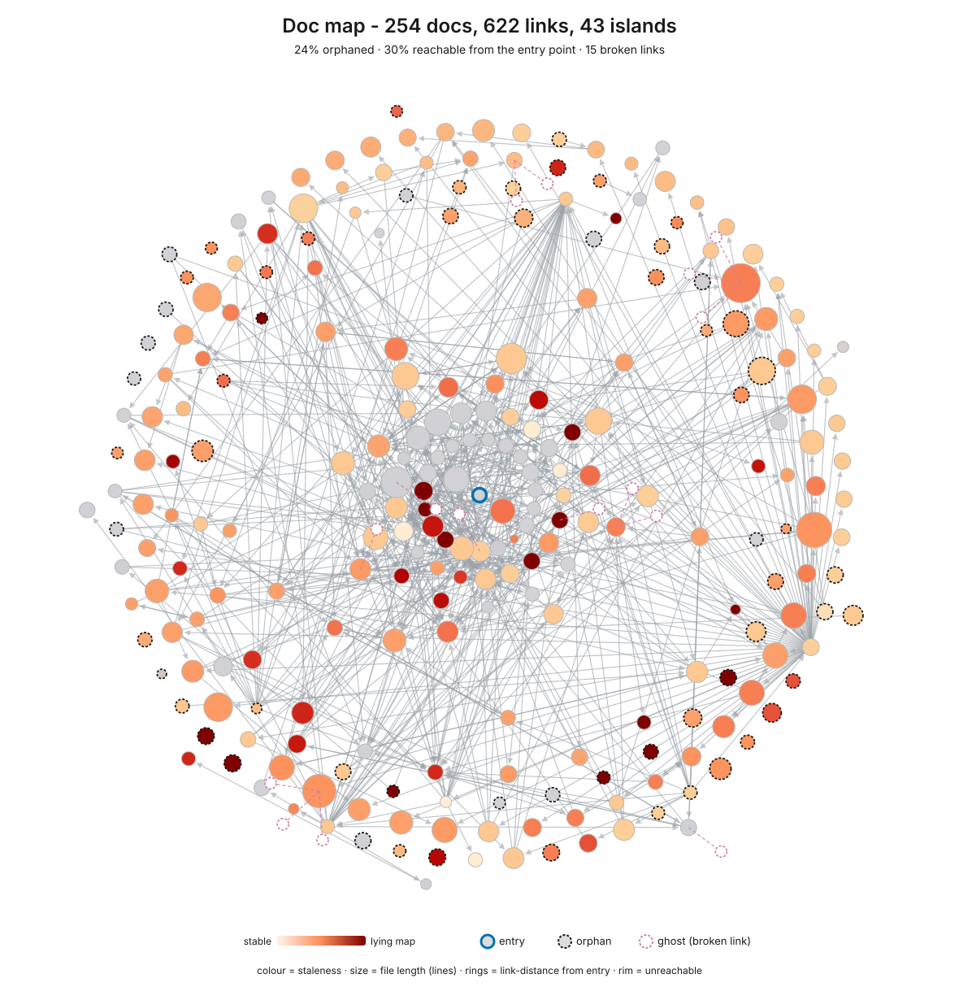
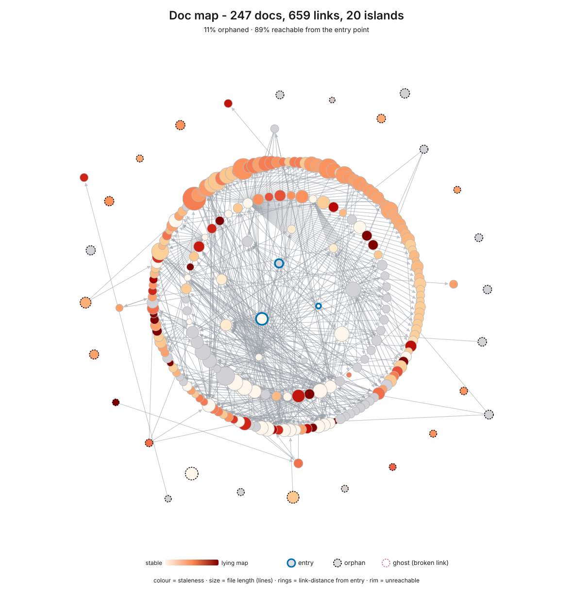
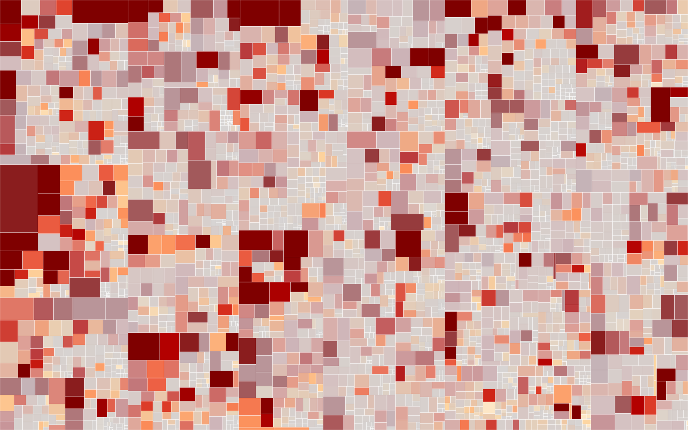
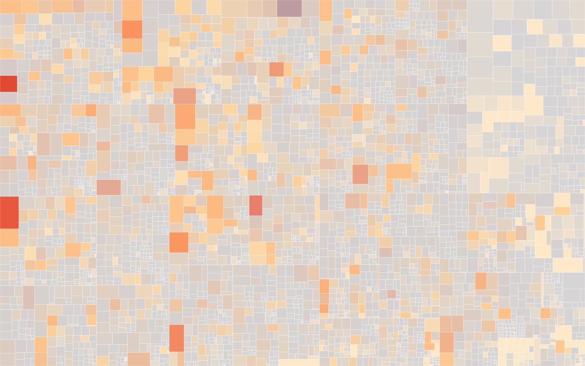

The difference is context, not capability
Every agent session starts with an empty head and one narrow context window. The question is how much of a tenured engineer's implicit map the codebase has made explicit.
The map
Where things live, which contracts are load-bearing, where the minefields are. The aim is a codebase legible enough that the relevant slice fits one context window, with the agent's answers anchored to code a person can check in ten seconds.
The guardrails
When a contributor makes a mistake, ask what made it possible and what would make it impossible next time. Linters, architecture tests, CI gates, coverage and review bots protect the contributor by design, the way staged environments protect a new engineer.
Legibility you can trust, not omniscience you can't.
Skills
Invoke each one in Claude Code as /ai-native-toolkit:<name>. The standalone ZIPs fire on the same slash name or on a natural-language request.
Portable, also as standalone ZIPs
- /assess
- Scores a codebase's readiness for AI contributors against a 0-8 layered contract model, with a complexity hotspot treemap and a doc-navigability graph. Writes a report with the Top 3 Actions, naming files.
- /huddle
- Structured multi-perspective deliberation using Six Thinking Hats, sized by Fibonacci from solo to board.
- /deslop
- Detects and removes the telltale signs of AI writing, derived from Wikipedia's "Signs of AI writing". Runs as a silent gate or an explicit edit pass.
- /skill-forge
- Hardens a skill or agent instruction file through judge-panel refinement rounds until it clears a 3-tier promotion gate.
- /semantic-compress
- Shrinks an LLM-directed document while preserving what it does, gating whole-document distillation on an A/B behavioural-equivalence check.
Claude Code only
- /ghsync
- Bulk-clones and fast-forward syncs every GitHub repo you can access across an org or personal account.
- /ghreport
- Read-only org repo state report: open PRs, default-branch CI, security alerts and branch protection per repo.
Portable commands
- /6hats
- Solo Six Thinking Hats analysis:
/huddleat team size 1. - /understand
- Deep understanding mode (nemawashi): exhaustive context-gathering before action.
Workflow commands
- /tm
- Task Master orchestration: starts, reviews, or cleans up tasks based on current state.
- /issues
- Triages open GitHub issues, then runs the agent-ready ones to merge with Agent Teams.
- /fix-pr
- Iterates on a PR's CI failures and review comments until it is green.
- /fix-develop
- Fix loop for failing CI on the repo's default branch.
The workflow commands bake in one author's daily setup: a <repo>-main/ plus worktree/ layout, GitHub and the gh CLI, Task Master, review bots, and the Agent Teams flag. Read the adapting notes before relying on them elsewhere.
What /assess draws
Two views from one run on a real monorepo of about 650k lines, file paths sanitized: before, and after its maintainers worked through the report's Top 3 Actions. The analysis is conventional static analysis and git history, not the model, so the findings reproduce run to run. Open any image for the full interactive SVG.
Doc-navigability graph
Can an agent traverse the docs to the right place, and is what it finds still true?




- Reachable from entry
30%89%- Orphaned docs
24%11%- Disconnected islands
4320- Broken links
150
Complexity hotspot heatmap
Which files are riskiest to change next week? The heatmap stays the same repo's complexity profile throughout: it shows which territory is dangerous, while the graph shows whether the map is honest.




Reading the doc graph
- Position is reachability. The centre is the entry doc, rings are link distance from it, the rim is unreachable, and a dashed ring marks an orphan.
- Colour is staleness. Vivid red is a frozen doc beside churning code: a lying map.
- Size is file length. Solid edges are links, dotted edges are references.
Reading the heatmap
- Size is estimated tokens (about chars/4, the context-window unit). Lines of code are in the tooltip.
- Hue is cyclomatic complexity, red for high. Saturation is recent git churn, vivid for active.
- The vivid-red blocks are what an agent or a person is most likely to break next week. Both views use the colour-blind-safe OrRd ramp, with no red-green.
Elsewhere
- Huddle explainerA narrated visual walkthrough of how
/huddlesizes a team and seats its hats. - AI-Readiness Assess GateThe
/assessdeterministic core as a GitHub Action. Runs on every PR with no model and no API keys; warn-only unless.assess/config.tomlopts in to failing. - Source on GitHubThe README, the Map of Content, and every skill's
SKILL.md. - Latest releaseRelease notes and the link to that version's standalone skill ZIPs.